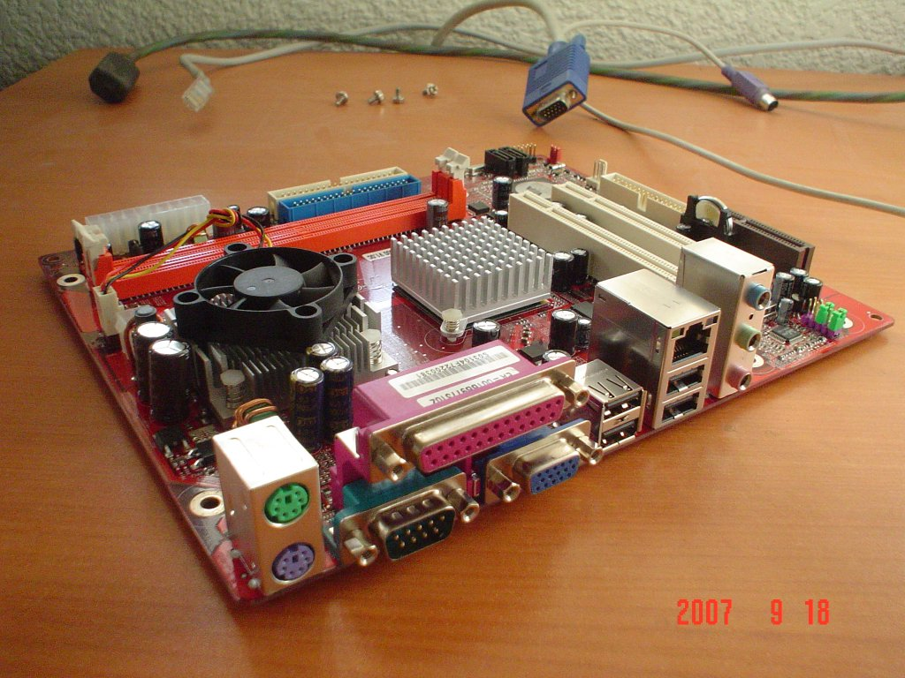

Via pc2500 primera impresión
Después de mucho tiempo de búsqueda, por fin tengo en mis manos un equipo Mini-ITX de Via Technologies.
24 September 2007
Después de mucho tiempo de búsqueda, por fin tengo en mis manos un equipo Mini-ITX de Via Technologies.





Las placas Mini-ITX son generalmente refrigeradas mediante dispositivos pasivos (disipadores de calor) por su arquitectura de bajo consumo y son ideales para su uso como HTPC (como un Home Theater con una PC) donde el ruido generado por la computadora (y en particular, por los ventiladores de refrigeración) resultaría molesto a la hora de disfrutar una película. Particularmente para este modelo, el VIA pc2500, sólo se tiene un pequeño ventilador para el procesador.
Antes de entrar de lleno en mostrarles las características de este equipo, quiero hacer un paréntesis para que reflexione sobre el hardware que hay en el mercado. Por un lado el avance tecnológico da como fruto procesadores y equipos más poderosos, como muestro en esta tabla de los procesadores Intel obtenida de microprocessor_timeline.pdf:
| Lanzamiento | Procesador | Velocidad |
|---|---|---|
| 1993 | Pentium | 60 - 66 MHz |
| 1997 | Pentium II | 200 - 300 MHz |
| 1999 | Pentium III | 650 - 1200 MHz |
| 2000 | Pentium 4 | 1300 - 2000 MHz |
| 2002 | Pentium 4 HT | 3200 - 3400 MHz |
| 2006 | Pentium Core 2 Duo | 1800 - 3000 MHz x 2 núcleos |
| 2007 | Pentium Quaq Core | 2400 - 2660 MHz x 4 núcleos |
Vemos que los procesadores se hacen más rápidos y poderosos, y en beneficio, las computadoras más nuevas tienen más capacidad para hacer tareas demandantes.
Pero vayamos al grano, a la aplicación o tarea final del equipo. Si usted demanda los más nuevos entornos gráficos, edición de video o virtualización, definitivamente necesita un equipo poderoso del que hablamos. En cambio, tareas simples y concretas pueden hacerce perfectamente en tecnologías anteriores y bien probadas.
Via Technologies le está apostando a este último concepto. Ha mezclado las nuevas tecnologías de minitiaurización y rendimiento energético con la herencia de los mejores procesadores para crear computadoras eficientes y económicas.
El modelo VIA pc2500 tiene como características técnicas:
- Procesador VIA C7-D de 1.5 GHz (compatible con x86)
- Tamaño 17 x 17 cm (Mini-ITX)
- Capacidades multimedia y 3D (MMX, SSE, SSE2, SSE3)
- Hasta 2 GB de RAM DDR2
- Video VIA UniChrome con aceleración para decodificar MPEG-2
- Audio integrado 6 canales
- Hasta 8 puertos USB
- Tarjeta de red integrada 10/100 mbps
El objetivo de VIA es ocupar con este formato nichos de mercado como los HTPC y los appliances o cajas negras de bajo costo, por ejemplo, almacenamiento NAS, enrutadores de comunicaciones, etc. Esto fue posible gracias al microprocesador Eden y sus sucesores. Este microprocesador es la herencia legada por Cyrix, compañía fabricante de microprocesadores clónicos x86, que fue adquirida por VIA Technologies.
En conclusión, esta es la opción verde y realmente económica ($700 M.N. aproximadamente en México) en lo que a computación se refiere.
Próximamente les describiré como es posible usar GNU/Linux en este equipo, usando la técnica de toma del sistema operativo por red, esto es sin disco duro, usando Gentoo Linux.